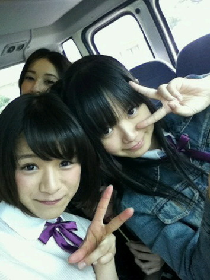

| 2012/06 27 Wed | ひめたん(* ゝω・*)ノ その174 |
ぬーん
日曜日は
らりん
(永島聖羅chan)宅にお泊まりしまーした！
その日はレッスン終わって、らりん宅着いて、
お風呂入って、乃木どこ見て速攻寝ました。
その次の日の朝も早かったからね♪
らりん宅行ったの久々だったなー４ヶ月ぶりとか？
ひめたん爆睡してたんだってねー...
ブログみて始めて知ったわ(´▽｀)ノ
一緒に寝たの。寝る前にお話したの。
何話したか気になるって？言わなーいひみつー///にやにや
とにかくらりんのおうちは落ち着くのよ。好きよー(ω)
またおじゃまさせてね！
あっそういや先週の乃木どこ？で「狼に口笛を」パフォーマンス初披露！
ちょっとだったけどね。見たことないよーって方には新鮮だったかな(^O^)

 俺の誕生日は6月25日だよ。良かったらお祝いして〜。
俺の誕生日は6月25日だよ。良かったらお祝いして〜。
お誕生日おめでとう！
ひめきゅんさんで連ちゃんだね(ω)♪さーすがっ
素敵ないちねんになりますようにー...
6月26日が誕生日なんだけどひめたんお祝いしてほしいなぁ
お誕生日おめでとう！
これからもいっぱいいっぱいきゅんきゅんしてくださいねーわらっ
素敵ないちねんになりますように。
 つぎは大阪の全握だ！??
俺は、ひめぽんが14日に来れるかどうかが心配で仕方ないっす（笑）
つぎは大阪の全握だ！??
俺は、ひめぽんが14日に来れるかどうかが心配で仕方ないっす（笑）
テストと重なりませんようにー(>人<)
ひめたん、今度の期末で補習に引っ掛からんよーに
頑張るけ応援してねー
ここまでパワーを送ってくださいみーなさーんっ
7/7の全握も行くからね！！
東京の全握はひめたん来るのかな？
7月の全握でみれるのカナ？??劼瓩燭鵑舛磴鵑箸い襦
東京は行くよ！
期末テスト受けてから急いで行く！
...そういや全握は久々な気がする。前回の名古屋はおらんかったの。ぐるカー大阪ぶり？
ペア誰かなー。楽しみやあ(。・_・。)
ひめたんは七夕で何をお願いするのかな？？
ひめたんの周りには笹の葉ないけれども、あったらなにおねがいしよっかなー
んーひみつー(*/ω＼*)
ところで、質問を続けているけど、ひめたん何かたくらんでるでしょ？?
なぜばれたしーっ
てへぺろぺろぺろ(*ノω＼*)
...とか言ってみる
お楽しみに
ひめたん大図鑑---だよ~??
もし数えるなら157+18=175になるんだけど、、どうしてるの？
あー更新数に数えたげてくーださいな。
教えてくれてありがとうです(ω)☆
てかブログもうそんなに更新したんだね。はやーい！
ファミリーやひめきゅんさんから寄せられる沢山の質問やアンケート結果は
どうやって管理してるの？
PCでエクセルやアクセスを駆使してデータベースを作成してたりして・・・
そんな器用なことはできません←
ただ、この狭いせまい脳内にひたすらインプットするだけ。
それだけです。どや。

それでは！
これから12日間ほどいつものブログはおやすみさせてください←
ちょっと工夫を凝らした大図鑑やら色々と用意してるのでお楽しみに♪
あと、いっぱいの質問返しもするから見てね！
(*´・ω・*)ひめたん
コメント(97)
2012/06/27 07:00